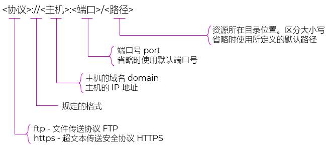
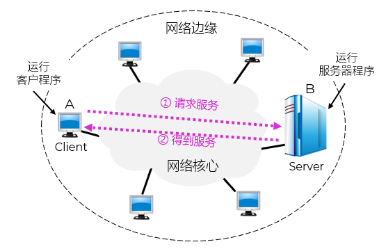
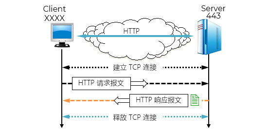
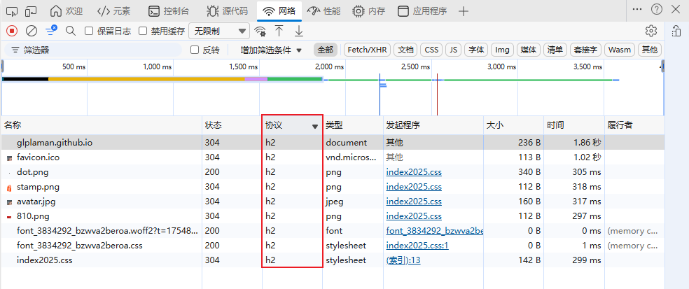
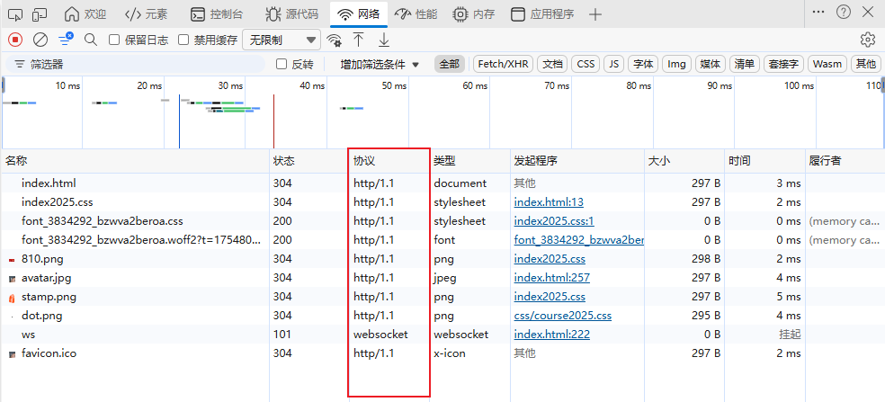
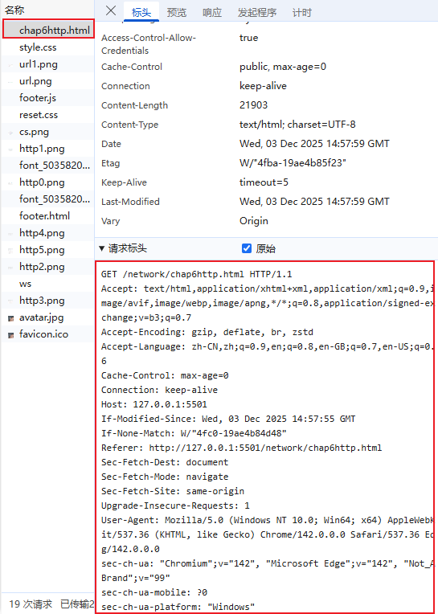
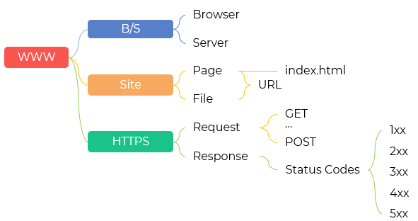
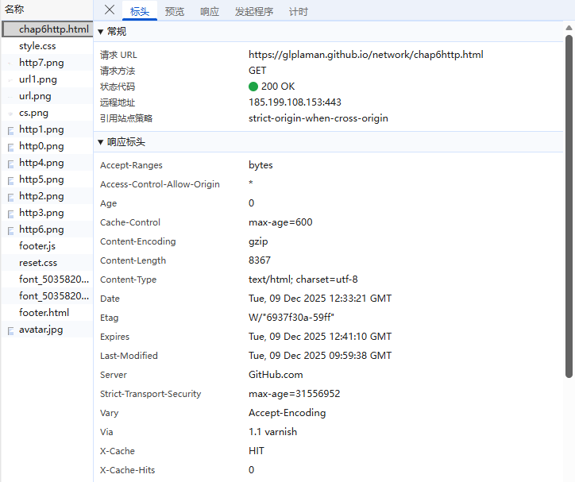
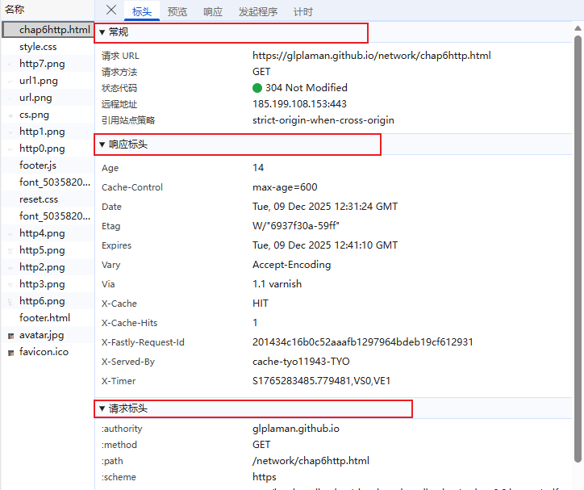

超文本传输协议
@Http- 内容 Contents

因特网 Internet
万维网 World Wide Web
超文本标记语言 HyperText Mark Language - HTML
- 万维网 World Wide Web
- WWW 是一个基于超文本 hypertext 的信息系统，由蒂姆·伯纳斯-李（Tim Berners-Lee）于1989年提出
- 由超文本链接构成的全球信息网络
- 使用 URL 来定位资源
- 使用 HTML/CSS/JS 构建网页 page 内容
- 使用 HTTP/HTTPS 协议传输数据
- 统一资源定位 URL
- 资源：指在互联网上可以被访问的任何对象，包括文件目录、文件、文档、图像、声音等，以及与互联网相连的任何形式的数据
- 互联网上的资源，都有一个唯一确定的 URL
- 包括：
协议 protocol
主机 host
端口 port
路径 path
- 由以冒号（:）隔开的两大部分组成
- 对字符大写或小写没有要求
- 网页 Page
- 网页文件的后缀名是 .html；早期多使用.htm - 8.3
- 一个完整的页面需要 结构(html标签)、样式(CSS)和逻辑(JavaScript)共同呈现
- 分为：
静态万维网文档。内容不会改变。简单
动态万维网文档。文档的内容由应用程序动态创建
活动万维网文档。由浏览器端改变文档的内容
- 从开发角色分工，可以分：
前端 Frontend
后端 Backend
全栈开发 Full Stack
- 现在开发的原则：结构、样式和逻辑三分离 - Separation of Concerns
- 常见集成开发环境 IDE
Vs code
Sublime - 付费
WebStorm - 付费
Atom - 停更
IntelliJ IDEA - Java + 前端混合项目
PhpStorm - WordPress、Laravel 等 PHP 项目
云上平台/线上环境
- 文档 Document
- 网页 Page，特指 .html
- 样式文件 .css
- 逻辑文件 .js
- 各种资源
- 网站 Site
- 网页和各种资源如图像、多媒体、数据库以及脚本的集合
- 通过互联网提供给用户访问
- 每个网站有自己的主页 homePage，是一个网站的门户 Portal
- 默认为 index.html；使用默认文件名可以带来很多便利
- 部署
早期多使用 FTP
SVN / Git + Web Hosting
持续集成（CI）+ 持续部署（CD）
现在各大 IDE 都可以一键部署
- 超文本标记语言 HyperText Markup Language - HTML
- 制作万维网页面的标准语言
- 它消除了不同计算机之间信息交流的障碍
- 是万维网的重要基础 [RFC 2854]
- 定义网页的结构和内容
- 是网页的骨架
- 不负责样式或交互，只关注语义结构
- HTML 定义了许多用于描述元素、排版的命令：标记，也叫标签 Tag，如 <h1>、<p>、<img>
- HTML 把各种标签嵌入到万维网的页面中，构成了所谓的 HTML 文档
- HTML 文档是一种可以用任何文本编辑器创建的 ASCII 码文件
- HTML 文档的后缀：.html 或 .htm
- 层叠样式表 Cascading Style Sheets - CSS
- 控制网页的外观和布局
- 决定颜色、字体、大小、间距、动画等视觉效果
- 分离内容（HTML）和表现（CSS），便于维护
- 可复用样式，统一设计风格
- 逻辑 JavaScript
- 实现网页的动态行为和交互功能
- 如按钮点击、表单验证、轮播图、AJAX 加载等
- 运行在浏览器中（客户端脚本）
- 可操作 DOM（文档对象模型）、处理事件、发送请求
- 浏览器 Browser/服务器 Server - B/S
- HTTP 是 Web 通信的基础协议
- 浏览器 Browser
客户端程序，即浏览器
所有交互都在浏览器中完成
- 服务器 Server
被动接收请求
向客户提供服务
不间断工作
同时处理多个请求；并发请求
强大的硬件和高级的操作系统
- 基本交互过程
在浏览器的地址窗口中键入所要找的页面的 URL，发起请求/访问网站
在某一个页面中用鼠标点击一个可选部分，这时浏览器会自动在互联网上找到所要链接的页面
服务器收到请求后，返回的是 HTML 内容（或 JSON 等格式）
浏览器接收到这些内容后，自动解析并展示给用户
- 为了区分传统的C/S，这种通信方式也称 Browser/Server - B/S
- 特点：
整个过程不需要安装特定客户端程序，只需要一个浏览器 Browser
微客户端/服务器模式 C/S
所有业务逻辑和数据处理集中在服务器端
响应由服务器生成 HTML 页面，浏览器负责渲染展示
更新方便：只要服务器更新，所有用户立即看到新版本
- 后端 Backend
- 服务器技术 Server
- IIS：Internet Information Services，因特网信息服务
- Apache
- tomcat，GitHub星级6.1k
- nginx，GitHub星级16.6k
- Node.js，GitHub星级88.2k
- WAMP：Window + Apache + MySql + PHP
- LAMP：Linux + Apache + MySql + PHP
- AppSrer
- Laravel，GitHub星级69.9k
- PhpStorm
- 前端 Frontend
- HTML5 + CSS + JavaScript
- Java
- Python


<!DOCTYPE html> <HTML> <HEAD> <meta charset="UTF-8"> <meta http-equiv="X-UA-Compatible" content="IE=edge"> <meta name="viewport" content="width=device-width, initial-scale=1.0"> <TITLE>一个 HTML 的例子</TITLE> <link rel="stylesheet" href="../css/style.css"> <style> p{ cursor: pointer; } </style> </HEAD> <BODY> <H1>HTML 很容易掌握</H1> <P id = 'leading'>这是第一个段落。</P> <P>这是第二个段落。</P> <script> const age = 18; let dom = document.getElementById('leading'); dom.addEventListener('click', ()=>{ dom.style.color = '#f40'; }) </script> </BODY> </HTML>

超文本传输协议 HTTP
- HTTP 是面向事务的 transaction-oriented 应用层协议
- 使用 TCP 连接进行可靠的传送
- 定义了浏览器与万维网服务器通信的 格式和规则
- 是万维网上能够可靠地交换文件（包括文本、声音、图像等各种多媒体文件）的重要基础
- HTTP 不仅传送完成超文本跳转所必需的信息，而且也传送任何可从互联网上得到的信息，如文本、超文本、声音和图像等
- WWW 基本过程
- HTTP 使用了面向连接的 TCP 作为运输层协议，保证了数据的可靠传输
- 在 HTTP 客户与 HTTP 服务器之间的每次交互，都由一个 ASCII 码串构成的请求 Request 和一个类似的通用互联网扩充，即“类MIME (MIME-like)”的响应 Response组成
MIME：最初是为电子邮件系统设计的，用于在纯文本邮件中传输非文本内容（如图片、音频、附件等）
- 先建立 TCP 连接，再传输数据
- 第3次握手可以携带数据 - HTTP 请求
- 请求文档所需的时间
>= RTT（三报文握手建立 TCP 连接）+ RTT（请求和接收文档）+ 文档的传输时间
>= 2 RTT + 文档的传输时间 - HTTP 1.0
- 无连接的 connectionless
每次客户端发起一个请求，服务器处理完就关闭连接
客户端和服务器之间不需要维持长期的连接
每个请求/响应对都是独立的通信过程
每请求一个页面需要2倍的RTT
频繁拆连和建连
- HTTP 1.1
- 使用持续连接
- 一个 TCP 连接可以复用多次请求/响应
- 但请求和响应必须按顺序完成，容易造成队头阻塞
- TCP的重传特性也影响了响应速度
- 每次请求都要携带完整的头部信息，即使这些信息和上一次几乎一样
- 尤其是 Cookie，常常非常大（几十到几百字节），而且每个请求都带
- HTTP 2.0
- 满足非文本通信需求
- 满足实时性通信需求
- 解决头部重复：
不再以文本形式发送头部，而是使用 HPACK 压缩算法
建立一个“头部字典”，常见字段用编号代替；重复值只传一次
- 所有主流浏览器（Chrome、Firefox、Safari、Edge 等）只支持在 TLS（即 HTTPS）之上使用 HTTP/2
想让网站用 HTTP/2，必须部署 HTTPS
对 Web 前端和普通网站来说，HTTP/2 = HTTPS 是事实标准
- HTTP 1.X：现在你访问首页 /index.html，页面中还引用了：
/style.css
/app.js
/logo.png
- 第一个请求 /index.html
- 第二个请求 /style.css
- 第三个请求 /app.js
- 第四个请求 /logo.png
- HTTP 2.X：发送并创建、更新字典
- 第一个请求 /index.html
- HPACK 编码后（简化示意）：
:method → 静态表索引 2（代表 "GET"）
:path → 静态表索引 4 + 字符串 "/index.html"
host → 静态表索引 1 + 字符串 "www.example.com"
user-agent → 首次出现，全量发送，并存入动态表
cookie → 首次出现，全量发送，并存入动态表
- 第二个请求 /style.css
- HPACK 编码： 传输内容大幅减少！
:method → 索引 2（GET）
:path → 索引 4 + "/style.css"
host → 索引 1 + "www.example.com"
user-agent → 直接发索引 63（不用再传字符串！）
cookie → 直接发索引 62（不用再传 70 字节！）
- 其它请求类似
- 开发环境下的 HTTP 1.x
- 生产环境下的 HTTP 2.X - HTTPS
- 特点 Feature
- 对所有的HTTP，无论版本，都是无状态的 stateless
服务器不会记住之前的请求信息
每次请求都必须包含服务器处理该请求所需的全部信息
例如：你登录后再次访问页面，服务器不会“记得”你已经登录过，除非你通过 Cookie、Token 等机制主动传递身份信息
引入 Cookie、Session、Token 等机制在应用层模拟状态


HTTP/1.0 → 解决能不能通信
HTTP/1.1 → 解决能不能少建几次连接
HTTP/2.0 → 解决能不能在一个连接里高效并行
HTTP/3 → 基于 QUIC/UDP，正在快速普及，进一步解决 TCP 队头阻塞问题
GET /index.html HTTP/1.1 Host: www.example.com User-Agent: Mozilla/5.0 (Windows NT 10.0) Accept: text/html Cookie: sessionid=abc123; user_lang=zh; theme=dark; cart_items=5 Connection: keep-alive
GET /style.css HTTP/1.1 Host: www.example.com User-Agent: Mozilla/5.0 (Windows NT 10.0) Accept: text/css Cookie: sessionid=abc123; user_lang=zh; theme=dark; cart_items=5 Connection: keep-alive
...
...
:method = GET :scheme = https :path = /index.html :host = www.example.com user-agent = Mozilla/5.0 ... cookie = sessionid=abc123; user_lang=zh; theme=dark; cart_items=5
:method = GET :path = /style.css :host = www.example.com user-agent = （同上） cookie = （同上）




: 开头的字段是 HTTP/2 二进制帧中的伪头部（pseudo-header），只有在 HTTP/2 中才出现
“显示临时标头。禁用缓存以查看完整的标头。” - 正是 HPACK 压缩的体现
为了防止你误以为“没传”，所以显示“临时标头”或“部分标头”
HTTP 报文结构
- 由于 HTTP 是面向正文的 text-oriented，因此报文中每一个字段的值都是一些 ASCII 码串，每个字段的长度都是不确定的
- 两类报文：
请求报文 Request：从客户向服务器的请求
响应报文 Response：从服务器到客户的回答
- 四个组成部分：
开始行：用于区分是请求报文还是响应报文
首部行：说明浏览器、服务器或报文主体的一些信息。可以有多行，也可以不使用
空行 CRLF
实体主体：请求报文中一般不用，响应报文中也可能没有该字段
- 请求报文 Request
- URI
请求标识符 Uniform Resource Identifier
URL的部分内容
通常是 URL 的路径+查询参数部分（如 /users?id=1），配合 Host 头共同构成完整 URL
- 实例
- 若干键值对，用于传递元信息
Host：目标主机和端口（HTTP/1.1 必须）
User-Agent：客户端信息
Accept：客户端可接受的 MIME 类型
Content-Type：请求体的媒体类型（如 POST 数据）
Authorization：认证信息
- 用 \r\n\r\n（即两个 CRLF）表示头部结束，后面是请求体
- 可选，通常用于 POST、PUT 等方法，携带提交的数据
- 响应报文 Response
- HTTP 响应也由四部分组成：
状态行
响应头（Header）
空行（CRLF）
响应体（Body，可选）
- 示例
- 常见响应头字段：
Content-Type：响应体的 MIME 类型
Content-Length：响应体字节数
Location：用于重定向（配合 3xx 状态码）
Set-Cookie：设置客户端 Cookie
- 创建测试文件 demo.html
- 在脚本中请求 <script>
- 使用浏览器的开发者工具检查网络请求
- .json
- .png
- .html
- .mp4
- 同样以 \r\n\r\n 分隔头部与响应体
- 返回给客户端的实际内容，如 HTML 页面、JSON 数据等
- 借助开发者工具中查看 chap6http.html
- HTTP 状态码 304 Not Modified 表示：“你本地缓存的资源仍然有效，请继续使用它。”
- 浏览器在第一次收到 200 响应时，已经记录了完整的响应头，包括 Content-Type: text/html
- 当后续收到 304 响应时，浏览器会复用之前缓存的完整响应头 + 缓存的 body
- 所以，即使 304 响应里没有 Content-Type，浏览器依然知道它是 text/html
<方法> <请求URI> <HTTP版本>
GET /index.html HTTP/1.1
:authority glplaman.github.io :method GET :path /network/chap6http.html :scheme https
| item | desc |
|---|---|
| GET | 从服务器获取资源 |
| POST | 向服务器提交数据 |
| PUT | 向服务器提交数据，并替换掉服务器上的数据 |
| DELETE | 向服务器删除数据 |
{
"username": "alice",
"password": "123456"
}
<HTTP版本> <状态码> <原因短语>
HTTP/1.1 200 OK
状态代码 200 OK
状态代码 304 Not Modified
状态代码 404 Not Found
Content-Type: text/html; charset=UTF-8 Content-Length: 1234 Server: Apache/2.4.1 Set-Cookie: sessionid=abc123; Path=/
fetch('https://glplaman.github.io/utils/video/v0.mp4')
.then(res=>res.json())
.then(res=>{
console.log(res)
})
| 类别 | 含义 | 常见状态码 |
|---|---|---|
| 1xx | 信息响应 | 100 Continue |
| 2xx | 成功 | 200 OK, 201 Created, 204 No Content |
| 3xx | 重定向 | 301 Moved Permanently, 302 Found, 304 Not Modified |
| 4xx | 客户端错误 | 400 Bad Request, 401 Unauthorized, 403 Forbidden, 404 Not Found |
| 5xx | 服务器错误 | 500 Internal Server Error, 502 Bad Gateway, 503 Service Unavailable |



请求报文 = 请求行 + 请求头 + 空行 + 请求体
响应报文 = 状态行 + 响应头 + 空行 + 响应体
状态码 是理解请求结果的关键，按 1xx~5xx 分类
其它 Other
- 可扩展标记语言 XML
- Extensible Markup Language
- 设计宗旨是：传输数据，而不是显示数据
- 特点和优点
可用来标记数据、定义数据类型
允许用户对自己的标记语言进行自定义，并且是无限制的
简单，与平台无关
将用户界面与结构化数据分隔开来
- 可扩展超文本标记语言 XHTML
- Extensible HTML
- 与 HTML 4.01 几乎相同，是 更严格 的 HTML 版本
必须自闭合：所有空元素必须以 /> 结尾
必须小写：标签名和属性名必须小写
属性值必须加引号
文档必须以 application/xhtml+xml MIME 类型提供
- 作为一种 XML 应用被重新定义的 HTML，将逐渐取代 HTML4.0
- 但最终被 HTML5 取代 - XHTML 名存实亡
- HTML5
- 2004 启动，2014 标准化
- 向后兼容：支持旧 HTML 写法，不破坏现有网站
- 容错优先：定义明确的“错误处理规则”，让所有浏览器一致解析
- 扩展功能：新增语义标签、表单控件、Canvas、本地存储、音视频等
- 支持两种语法：
HTML 序列化（text/html）：主流用法，宽松
XHTML 序列化（application/xhtml+xml）：保留给需要 XML 严格性的场景
- 今日实践建议
写 HTML5，使用 .html 扩展名
可以采用 XHTML 风格，但不是必须
MIME 类型始终用 text/html，除非你明确需要 XML 处理（极少见）
不要自称“我在写 XHTML”，除非你真的用 application/xhtml+xml 并通过 XML 验证器
- HTML4.0
- XHTML
- HTML5
<img src="x" alt="y">
<img src=x alt=y>
<IMG SRC="x" ALT="y">
<img src="x" alt="y" />
<img src="x" alt="y">
<img src="x" alt="y" />
- Reading